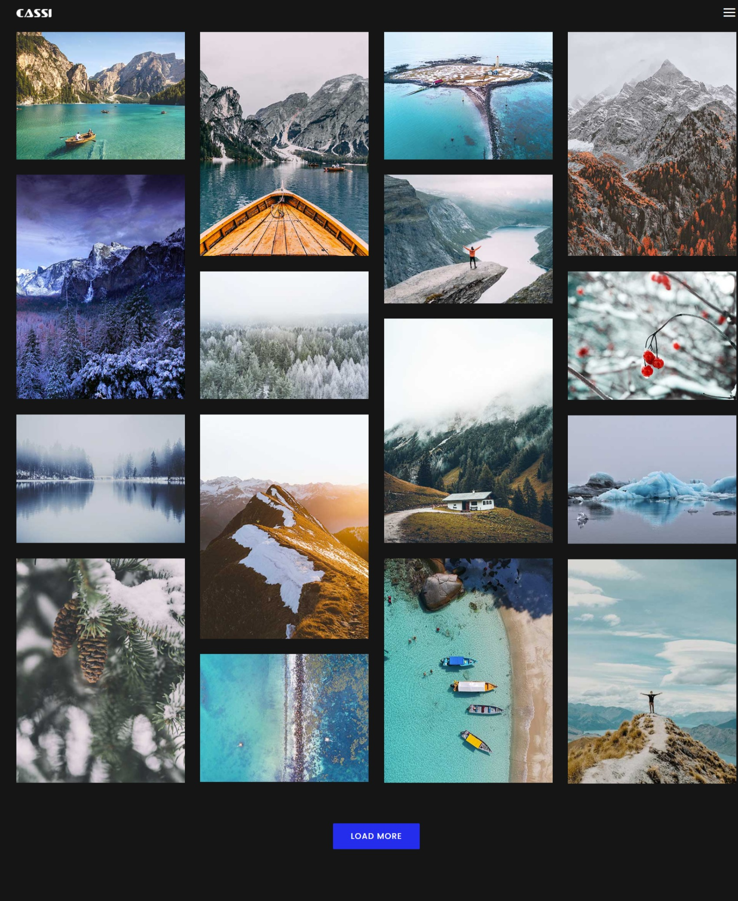
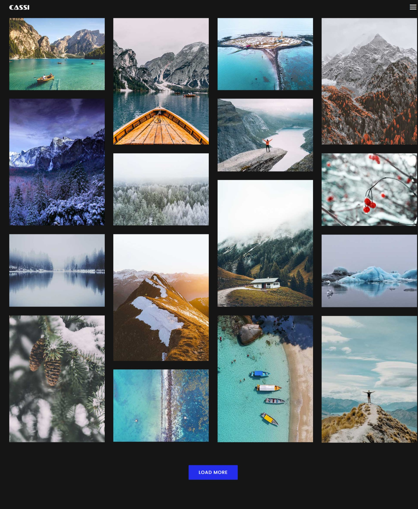

coding ?
cassi project
In the realm of pixels and shutter clicks, my latest project comes to life – a bespoke photographic website that aims to showcase the beauty of moments frozen in time. This endeavor is not merely a collection of images but a carefully crafted digital space where each photograph tells a story, and every click leads to an immersive visual experience. Project Goals: The primary goal of this photographic website is to provide a platform for both amateur and professional photographers to exhibit their work, fostering a community that celebrates the art of photography. Through a user-friendly interface, visitors can navigate seamlessly and explore a diverse range of captivating images. Features: Gallery Showcase: The heart of the website lies in its gallery, where photos are elegantly displayed in a visually appealing grid. Each thumbnail serves as a gateway to a larger, high-resolution version, ensuring that the essence of every image is preserved and appreciated. User Profiles: To encourage engagement and connection among photographers and enthusiasts, the website includes user profiles. Photographers can create their portfolios, share insights into their creative process, and connect with a like-minded audience. Categories and Tags: To enhance discoverability, the website employs a robust categorization system. Visitors can browse through different genres, themes, and styles, allowing them to find precisely what they are looking for or stumble upon hidden gems. Interactive Slideshows: Elevating the viewing experience, the website features interactive slideshows. Users can sit back and enjoy a curated selection of images, carefully arranged to tell a visual narrative.
 

First, solve the problem. Then, write the code.t.
What is cassi
Responsive Design: Recognizing the importance of accessibility, the website is designed to be responsive across various devices. Whether viewed on a desktop, tablet, or smartphone, the user experience remains seamless and visually striking. Community Forum: To foster a sense of community, the project incorporates a forum where photographers and enthusiasts can engage in discussions, share tips, and seek inspiration. This space is not just about images but also about the stories behind them. Event Galleries: The website accommodates special event galleries, allowing photographers to showcase their work from specific occasions or collaborations. This feature adds a dynamic element to the platform, keeping it fresh and ever-evolving. Conclusion: In the vast landscape of the internet, my photographic website project stands as a testament to the power of visual storytelling. Through thoughtful design and functionality, it aspires to connect individuals through the universal language of photography, creating a space where moments are not only captured but celebrated. Whether you're a seasoned photographer or a passionate viewer, this platform invites you to explore, appreciate, and contribute to the ever-expanding tapestry of visual narratives.
Comments (3)
cool.
thx bro.
great.